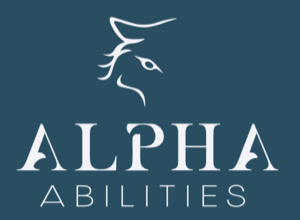
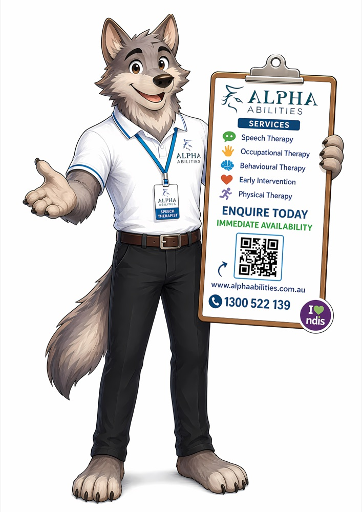
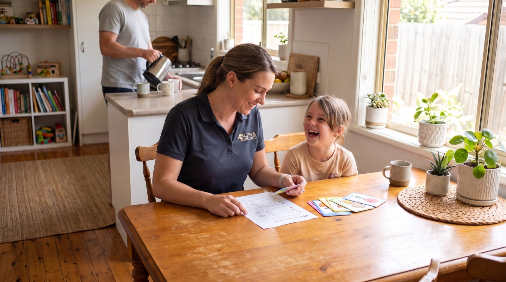

Speech therapy
For children who are hard to understand, slow to talk, stuck on certain sounds, or finding it hard to follow instructions and join in conversations.

At home, childcare or school, anywhere in Melbourne. It starts with a free 30-minute consult at your place - no waitlist to join, no clinic runs.
Half an hour. No charge. No obligation.

Half an hour. No charge. No obligation. If we are not the right fit, we will say so here.
Question 1 of 5
A team member will call you within one business day to book in your consult.
A team member will call you within one business day to book in your consult. Bring your NDIS plan along - the therapist will tell you honestly what it covers.
We are an NDIS-funded children's service in Melbourne, so we are not the right fit right now. If your child does not yet have NDIS access, your GP or paediatrician is the right place to start that process. If your situation is a bit different from what the questions above cover, call us on 1300 522 139 and we will talk it through honestly.
A clinic and simply waiting are both real options. Here is where each one stands.
| Compare on | Clinic waitlist | Alpha Abilities - home, childcare, school | Waiting it out |
|---|---|---|---|
| Where therapy happens | A clinic room, wherever one has a free slot | Your child's own home, childcare or school | Nowhere - nothing is happening |
| When it can start | After you join a waitlist, often months long | A free consult first, then sessions begin without joining a waitlist | Never, until you take the first step |
| What the funding buys | Therapy hours, minus time lost to travel and reports written off-site | Hands-on therapy, not reports | Nothing - funding sits unused |
| Travel required | Yes - you drive to every session, often after school or work | No travel charges - the therapist comes to you | None, because nothing is happening |
| Pricing clarity | Varies by provider, often unclear until you ask | One fixed fortnightly amount, in writing first | Not applicable |
| If it is not the right fit | Often no honest conversation, just more waiting | We will tell you at the consult and point you somewhere better | The gap keeps growing while you wait |
| Worth knowing | A clinic room can suit a child who focuses better away from home - we will tell you at the consult if that is your child. | ||
Five services, one visit-you model: speech therapy, occupational therapy, early intervention therapy, behavioural therapy and exercise physiology - all delivered wherever your child already is.
For children who are hard to understand, slow to talk, stuck on certain sounds, or finding it hard to follow instructions and join in conversations.
For children who struggle with fine motor skills like pencil grip and buttons, big movements like running and climbing, sensory overwhelm, or daily routines like getting dressed and settling.
For younger children just starting to build the skills that play, communication and daily routines will ask of them, worked on early and at their own pace.
For children who find big feelings, routines or transitions hard to manage, with practical strategies built around how your family's day actually runs.
For children building strength, coordination and confidence in movement, with a program shaped around the things your child already enjoys doing.
Home, childcare or school, across Melbourne's growth corridors.
Werribee, Point Cook, Hoppers Crossing, Tarneit, Craigieburn, Cranbourne, Clyde, Melton, Sunbury and surrounds.
After the consult, one of our friendly team gives you a call to talk it through and see how you would like to go ahead - fixed weekly or fortnightly sessions, whichever fits your child and your family's routine. No pressure either way.
Five steps, starting with half an hour that costs nothing.
Five quick questions, then a therapist calls to arrange a time that suits your family.
The free half-hour visit, minute by minute:
The exact fortnightly amount, in writing, before you commit to anything.
At home, childcare or school - wherever suits your child best.
You hear how things are going and what happens next, in plain language.

If we are not the right fit, we will tell you at the consult and point you somewhere better. No hard sell, no pressure to sign anything on the day - the free consult exists so both sides can be honest before any paperwork happens.
We do not quote reviews here - read them yourself on Google.
Registrations: SPA AHPRA VIT ESSA Minimum bachelor-level qualification
Including the honest one about who this is not for.
One fixed fortnightly amount, disclosed in writing in your service agreement after the free consult, before you commit to anything. No travel charges, no surprise report invoices.
Yes. Your child's own home, childcare room or classroom is where they actually need to use these skills, so working there means what they practise carries over into everyday life rather than staying in a clinic room.
A therapist visits for half an hour - hello and floor play, watching how your child plays and communicates, then an honest read and a written picture of what sessions would look like. No charge, no obligation.
[you to confirm: plan-managed / self-managed / agency-managed funding types accepted]
Melbourne's growth corridors, including Werribee, Point Cook, Hoppers Crossing, Tarneit, Craigieburn, Cranbourne, Clyde, Melton, Sunbury and surrounds. If you are outside these areas, ask us at the consult - we may still be able to help.
[you to confirm: typical days from free consult to first regular session]
Children without NDIS therapy funding, families outside Melbourne, and anyone wanting clinic-based care only. If any of these describe your family, we will tell you honestly rather than waste your time.
A free half-hour consult at your place, then an honest, written picture of what sessions would look like - no waitlist to join, no clinic runs.
Book your free consultHalf an hour. No charge. No obligation. If we are not the right fit, we will tell you at the consult.